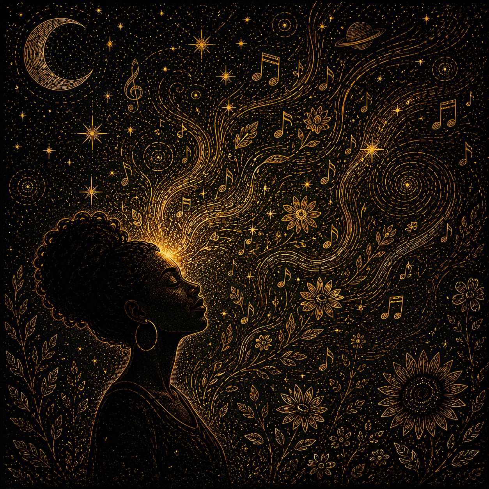
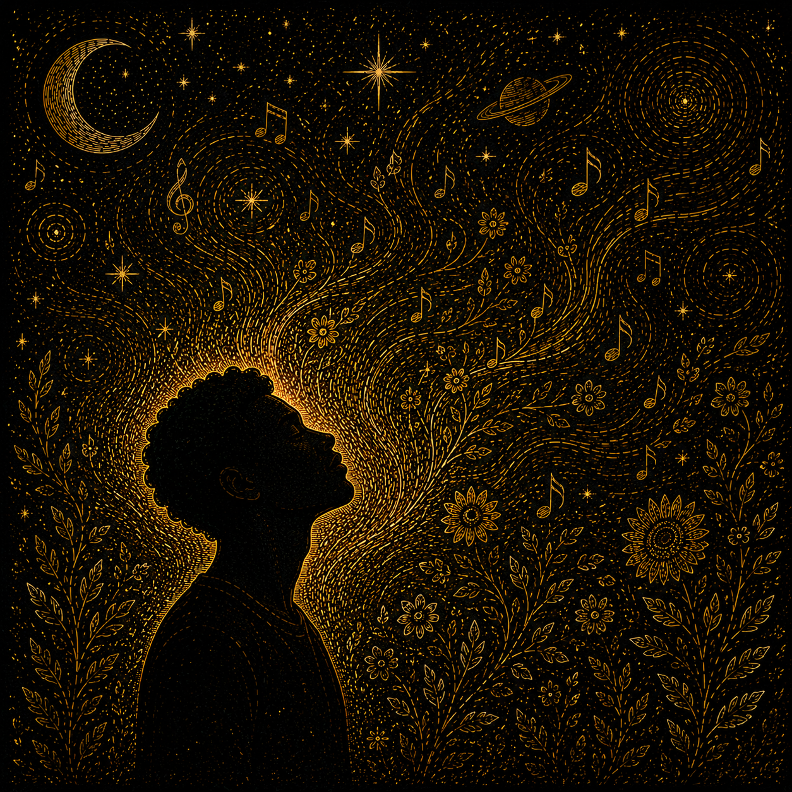
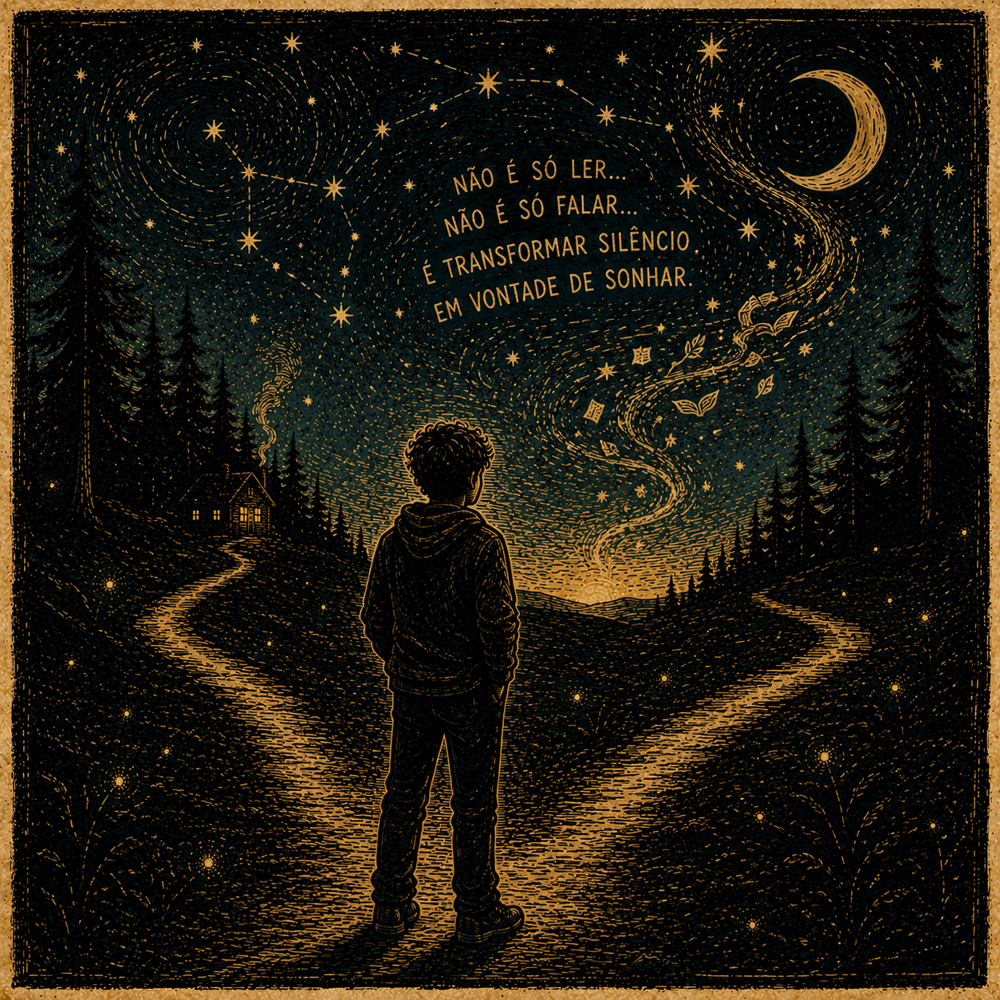
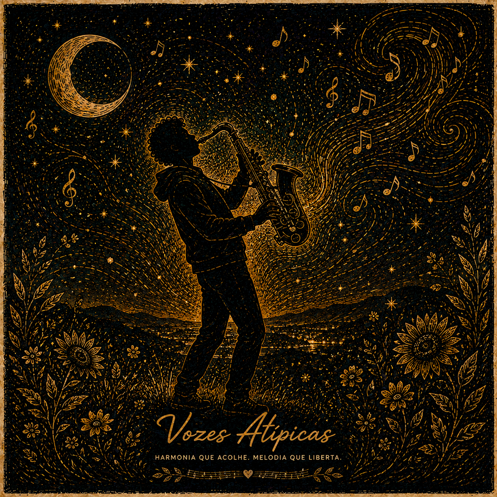
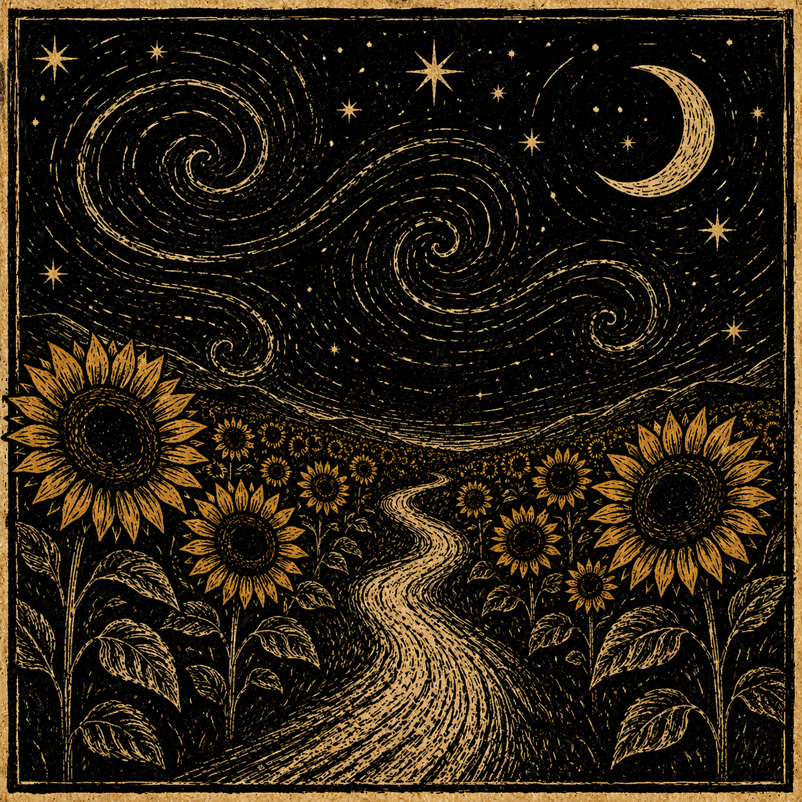
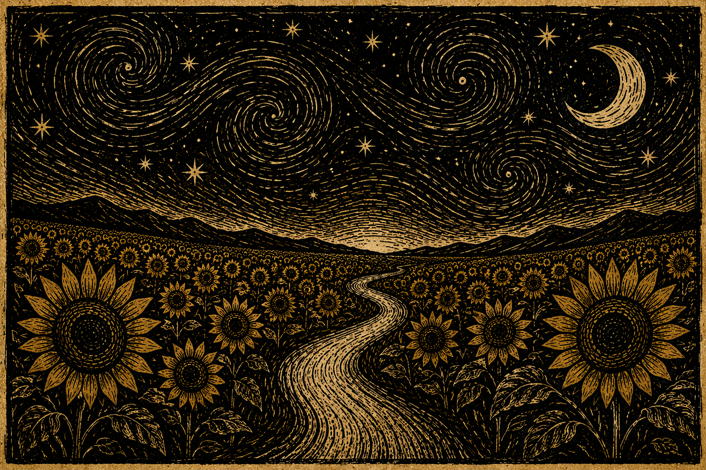
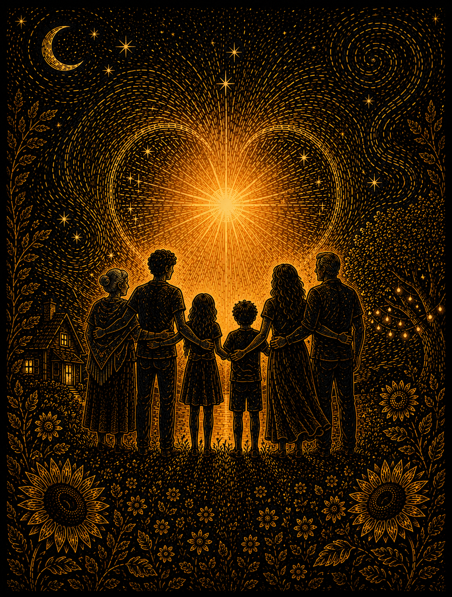
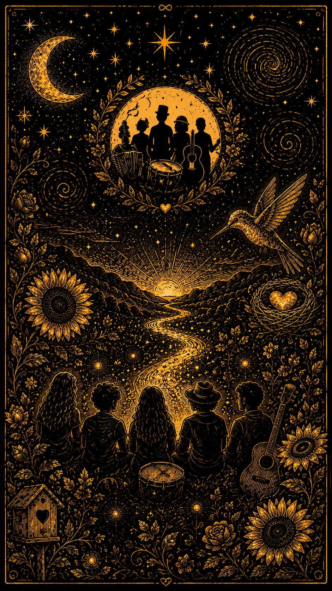

Pessoas que aprenderam a florescer sem precisar se tornar outra coisa.
A Banda Atípicos transforma autenticidade neurodivergente em linguagem simbólica, poética e musical. Não como explicação clínica da existência, mas como arte viva: sensorial, contemplativa, íntima e profundamente humana.

Pessoas que aprenderam a buscar luz mesmo quando o mundo foi escuro demais.

O momento em que vozes antes reprimidas começam a ecoar.

A música como mapa interno. Frequências emocionais transformadas em paisagem.

Pertencimento sem performance. Abrigo emocional sem mascaramento.

Ser amado sem precisar se adaptar para caber.

Não pedir mais permissão para existir como se é.

Caminhos emocionais desenhados entre estrelas, vento e silêncio.

A arte como autorrealização e abraço musical coletivo.